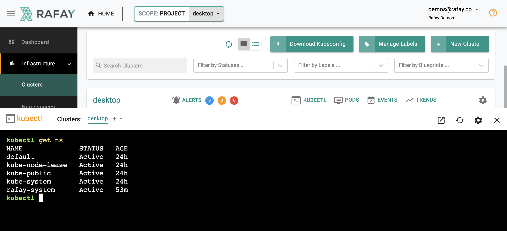
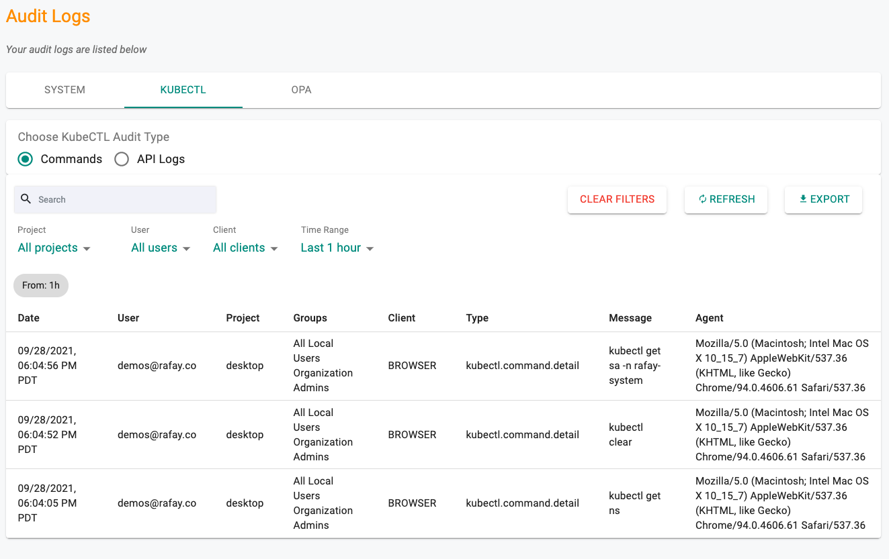

This is Part 3 of a multi-part, self paced exercise.
In part 3, you will
Estimated Time
Estimated time burden for this part is 10 minutes.

The controller injects a service account (sa) “Just In Time(JIT)” on the target cluster. The service account is automatically configured with the user’s role in the Org. You can view the JIT service account by using the following command. In the example below, the service account for the user “demos@rafay.co” was created just “5 seconds” back as the user opened the web based kubectl console. The service account is automatically removed from the target cluster once the configured lifetime expires.
kubectl get sa -n rafay-system
NAME SECRETS AGE
default 1 53m
demos-64rafay-46co 1 5s
system-sa 1 53mAll commands performed using the zero trust kubectl channel are centralized through the controller. As a result, a complete audit trail of “who did what and when” is maintained. Administrators can view these audit logs.
Audit logs can be viewed by “API” or “Commands” (for web based shell). See an example of the audit logs below.

Congratulations! In this part, you